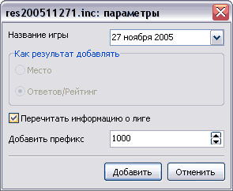

| Результаты игры | версия 0.3, от 19 января 2006 г. |
|
Введение Основные термины Работа с командами Ввод ответов Подсчет результатов Сохранение игры Параметры программы Лицензионные условия Авторы Благодарности |
Результаты игрыВ зависимости от типа игры команды могут распределиться по лигам двумя способами (равномерным и с переходом в другие лиги), а также вовсе не иметь понятия "лиги". В таблице результатов сортируются все команды, однако, распределение по местам и по лигам идет только среди команд, играющих "в зачет". Чтобы отобразить (или скрыть) результаты игры, нужно выбрать пункт меню "Результаты" или нажать клавишу F5. В правой стороне главного окна программы возникнет панель с результатами текущей игры. Это таблица, столбцами в которой являются:
Динамическое обновление результатаЕсли Вы хотите следить за тем, как вводимые ответы влияют на результат игры, Вы можете, не закрывая таблицу результатов, вводить ответы команд, если у вас включена опция "Динамическое обновление" результата. По умолчанию эта опция отключена, т.к. программа рассчитана на большое количество команд, при котором ежесекундная пересортировка была бы утомительной и долгой процедурой. Когда эта опция отключена, таблица результатов "заморожена" и пересчитывается лишь при новом открытии.
Очередная игра
Без лигДля работы в небольшом клубе, когда команд не очень много (или вместо команд вводятся имена игроков), понятие "лига" становится не совсем уместно. Именно для таких случаев был создан третий тип игры "без лиг". В этом случае из таблицы пропадает последний столбец, отвечающий за лигу, а также пропадает раскраска таблицы. Результаты сезонаПрограмма позволяет объединять результаты нескольких игр в одну общую таблицу и находить "абсолютного чемпиона". Для этого служит пункт "Итоги по играм..." меню "Результат" (клавиша F7). При нажатии на нее появится новое окно "Подведение итогов", в котором вы можете добавлять сохраненные результаты предыдущих игр (как сохранять результаты и протоколы смотрите здесь). Для этого нужно выбрать в меню пункт "Добавить результат..." (клавиша Insert), затем выбрать добавляемый файл результата. Добавление результатаПоявится дополнительное окно, в котором надо объяснить программе, в каком виде вставлять данные в итоговую таблицу. Введите (или выберите из списка) название добавляемой игры, укажите, нужно ли программе добавить информацию о лиге, в которой стала играть команда после добавляемой игры, а также укажите префикс результата. Префикс нужен для того, чтобы разграничивать разные лиги друг от друга. Предположим, есть две команды, одна в Высшей, другая во Второй лиге набрали одинаковое количество вопросов. Но вопросы в Высшей лиге были заведомо сложнее, следовательно, чтобы сохранить "сложность" игры, нужно к количеству вопросов добавить, к примеру, в Высшей лиге - 3000, в Первой - 2000, во Второй - 1000, а Третьей не добавлять ничего. Внимание! В данной версии программы при добавлении результата команд автоматическая сортировка происходит только при сохранении таблицы. На экране отображаются команды в том порядке, в каком они были указаны в файле добавляемого результата. Удаление строкиДля удаления команды из списка общих результатов сезона (допустим, команда всегда играла вне зачета) выберите пункт меню "Удалить строку" и подтвердите удаление команды. Удаление столбцаДля удаления из таблицы общих результатов сезона текущей колонки, выберите пункт меню "Удалить столбец" и подтвердите свой выбор. Сохранение и загрузка итогов сезонаРезультаты сезона можно сохранять и загружать также, как Вы делаете это при работе с блокнотом, Word`ом или любой другой программой. Чтобы загрузить сохраненные итоги сезона выберите пункт меню "Загрузить итоги...", а чтобы сохранить - "Сохранить итоги...". Редактирование таблицыТаблица результатов сезона является полностью редактируемой, вы можете изменить все: начиная с названия игры и заканчивая результатами команд за предыдущие игры. Правда, это никак не отразится на тех файлах, из которых Вы добавляли эти результаты... |